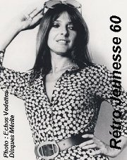
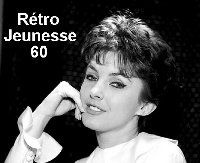

Dominique Michel
Dominique Michel, interprète, comédienne et animatrice, de son vrai nom Aimée Sylvestre, est née à Sorel en 1932.
À ses débuts pendant les années 40, elle étudie le piano et obtient un diplôme de l'école supérieure de musique à Lachine. Par la suite elle prend des cours de chant. En 1954, Raymond Levesque lui écrit la chanson "Une petite Canadienne" qui deviendra son premier succès sur disques. De 1956 à 1962, elle anime avec Normand Hudon l'émission "Le p'tit café".
Dominique obtient en 1957, un gand succès au palmarès avec la chanson "Sur l'perron", par la suite elle connaît plusieurs autres succès sur disques dont: Un clair de lune à Saint-Titre - Tu ne penses qu'à ça - Une grenouille dans le vent et Ces bottes sont faites pour marcher. À la télévision, elle anime aussi en 1963-1964 "Copain-Copain" avec Robert Demontigny. En 1966, Dominique Michel est élue Miss Radio-Télévision au Gala des artistes. De 1967 à 1972, elle joue à la télévision dans la populaire série "Moi et l'autre" avec Denise Filiatrault.